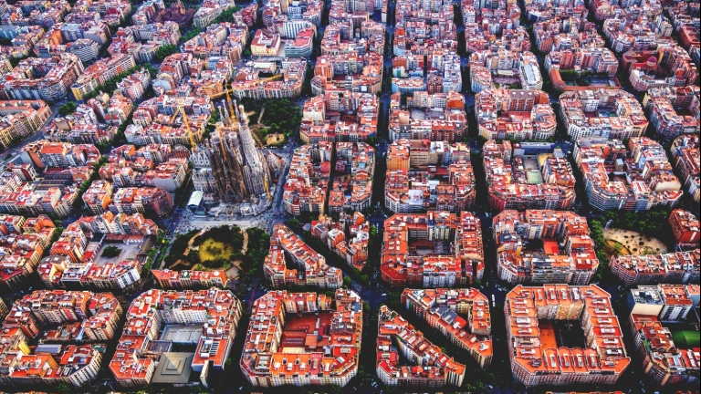

Lisabona
Barcelona
Roma

Cele mai bune hoteluri din Barcelona ->directionare pe Booking
Alte cateva locuri de vizitat in Barcelona:
1. Catedrala Gotica
2. Fantana Gaudi
3. Dealul Montjuic
4. Montserrat
5. Girona
6. Bucurati-va de arta contemporana
Preturile hotelurilor:
Paturile din camine mari de pensiuni (10-12 paturi) incep de la aproximativ 12 euro pe noapte, in timp ce paturile din hosteluri cu patru sau sase paturi incep de la 15 euro. Camerele private din pensiuni incep de la aproximativ 55 euro pe noapte pentru o camera dubla. Wi-Fi-ul gratuit este standard in pensiunile din oras si majoritatea ofera micul dejun la aproximativ 5 euro.
Exista cateva locuri de campare in afara centrului orasului. Preturile sunt cuprinse intre 5-15 euro pe noapte.
Hotelurile din Barcelona nu sunt ieftine decat daca sunt departe de centru. Camerele duble dintr-un hotel de doua stele incep de la 40 EUR pe noapte si urca de acolo.
Costul mediu al mancarii:
Puteti obtine tapas si mese ieftine la aproximativ 6-13 euro. Daca iesiti la paella, bauturi, aperitive etc., atunci ar trebui sa platiti aproximativ 35 euro pentru o masa. Mancarea ieftina costa in jur de 7 euro pe masa. Daca va cumparati mancarea, asteptati sa cheltuiti aproximativ 30-40 euro pentru o saptamana de produse alimentare.